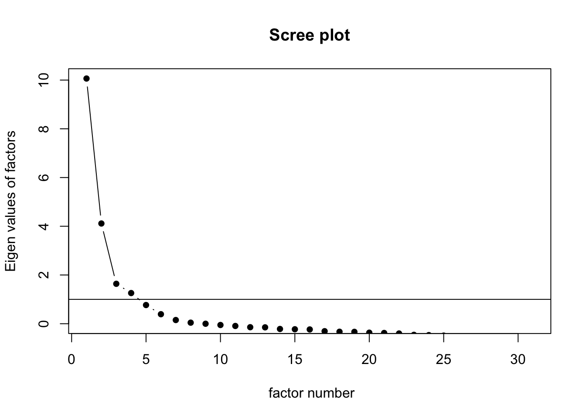

In this portfolio piece, I will be doing some factor analysis using my thesis data.
I have a variable called expectations for one’s adolescent. In the previous portfolio, I used it as a composite score; there were originally five sub-scales – upstanding/prosocial, internalizing, problem behaviors, risk-taking/rebellious, and friendly. The number of items differed in each scale, so the composite score was averaged across the 31 items, not the 5 subs-cales, so that the weight for each scale would correspond to the number of items. This has theoretical reasons for placing different weight on the sub-scales. I will not go into that now.
The goal of this portfolio is to conduct CFA and EFA to see whether it is true that these items load on 5 factors.
Let’s load the data first!
library(haven)
library(lavaan)
library(tidyverse)
library(semPlot)
SYP <- read_sav("composite204 4 copy.sav")Next, let’s dive right in defining our five factors.
set.seed(123)
model1 <- '
prosocial =~ SS_TargetII_1 + SS_TargetII_2 + SS_TargetII_3 + SS_TargetII_4 + SS_TargetII_5 + SS_TargetII_6
internalizing =~ SS_TargetII_7 + SS_TargetII_8 + SS_TargetII_9 + SS_TargetII_10 + SS_TargetII_11 + SS_TargetII_12
problem_behavior =~ SS_TargetII_13 + SS_TargetII_14 + SS_TargetII_15 + SS_Target_15 + SS_Target_16
risk_taking =~ SS_Target_1 + SS_Target_2 + SS_Target_3 + SS_Target_4 + SS_Target_5 + SS_Target_6 + SS_Target_7 + SS_Target_8 + SS_Target_9
friendly =~ SS_Target_10 + SS_Target_11 + SS_Target_12 + SS_Target_13 + SS_Target_14
'
fit1 <- cfa(model1, data = SYP)
summary(fit1, fit.measures = TRUE, standardized = TRUE)## lavaan 0.6-18 ended normally after 80 iterations
##
## Estimator ML
## Optimization method NLMINB
## Number of model parameters 72
##
## Used Total
## Number of observations 192 204
##
## Model Test User Model:
##
## Test statistic 1201.336
## Degrees of freedom 424
## P-value (Chi-square) 0.000
##
## Model Test Baseline Model:
##
## Test statistic 5086.388
## Degrees of freedom 465
## P-value 0.000
##
## User Model versus Baseline Model:
##
## Comparative Fit Index (CFI) 0.832
## Tucker-Lewis Index (TLI) 0.816
##
## Loglikelihood and Information Criteria:
##
## Loglikelihood user model (H0) -11242.584
## Loglikelihood unrestricted model (H1) NA
##
## Akaike (AIC) 22629.167
## Bayesian (BIC) 22863.707
## Sample-size adjusted Bayesian (SABIC) 22635.633
##
## Root Mean Square Error of Approximation:
##
## RMSEA 0.098
## 90 Percent confidence interval - lower 0.091
## 90 Percent confidence interval - upper 0.104
## P-value H_0: RMSEA <= 0.050 0.000
## P-value H_0: RMSEA >= 0.080 1.000
##
## Standardized Root Mean Square Residual:
##
## SRMR 0.098
##
## Parameter Estimates:
##
## Standard errors Standard
## Information Expected
## Information saturated (h1) model Structured
##
## Latent Variables:
## Estimate Std.Err z-value P(>|z|) Std.lv Std.all
## prosocial =~
## SS_TargetII_1 1.000 1.138 0.706
## SS_TargetII_2 1.482 0.140 10.619 0.000 1.687 0.838
## SS_TargetII_3 1.288 0.131 9.860 0.000 1.466 0.771
## SS_TargetII_4 0.898 0.102 8.809 0.000 1.022 0.685
## SS_TargetII_5 0.764 0.125 6.133 0.000 0.870 0.472
## SS_TargetII_6 1.288 0.143 9.019 0.000 1.466 0.702
## internalizing =~
## SS_TargetII_7 1.000 1.575 0.702
## SS_TargetII_8 0.898 0.124 7.272 0.000 1.415 0.557
## SS_TargetII_9 1.040 0.106 9.800 0.000 1.639 0.759
## SS_TargetII_10 1.400 0.127 11.027 0.000 2.206 0.863
## SS_TargetII_11 1.396 0.133 10.522 0.000 2.199 0.819
## SS_TargetII_12 1.167 0.116 10.031 0.000 1.839 0.778
## problem_behavior =~
## SS_TargetII_13 1.000 1.152 0.403
## SS_TargetII_14 1.845 0.311 5.930 0.000 2.126 0.972
## SS_TargetII_15 1.517 0.260 5.837 0.000 1.748 0.890
## SS_Target_15 1.676 0.290 5.773 0.000 1.931 0.850
## SS_Target_16 1.379 0.253 5.451 0.000 1.589 0.697
## risk_taking =~
## SS_Target_1 1.000 0.855 0.344
## SS_Target_2 1.640 0.382 4.294 0.000 1.403 0.543
## SS_Target_3 2.608 0.540 4.829 0.000 2.231 0.868
## SS_Target_4 2.639 0.543 4.858 0.000 2.258 0.901
## SS_Target_5 2.493 0.528 4.722 0.000 2.133 0.771
## SS_Target_6 2.418 0.509 4.755 0.000 2.069 0.798
## SS_Target_7 2.513 0.522 4.813 0.000 2.149 0.851
## SS_Target_8 2.513 0.527 4.769 0.000 2.150 0.810
## SS_Target_9 2.140 0.458 4.672 0.000 1.831 0.733
## friendly =~
## SS_Target_10 1.000 1.350 0.778
## SS_Target_11 1.302 0.095 13.774 0.000 1.758 0.879
## SS_Target_12 1.172 0.090 13.024 0.000 1.581 0.842
## SS_Target_13 1.328 0.091 14.585 0.000 1.792 0.917
## SS_Target_14 1.252 0.086 14.575 0.000 1.689 0.917
##
## Covariances:
## Estimate Std.Err z-value P(>|z|) Std.lv Std.all
## prosocial ~~
## internalizing -0.741 0.173 -4.283 0.000 -0.413 -0.413
## problem_behavr -0.251 0.114 -2.198 0.028 -0.192 -0.192
## risk_taking -0.470 0.131 -3.574 0.000 -0.483 -0.483
## friendly 1.106 0.178 6.214 0.000 0.720 0.720
## internalizing ~~
## problem_behavr 0.680 0.194 3.510 0.000 0.375 0.375
## risk_taking 0.853 0.220 3.875 0.000 0.633 0.633
## friendly -0.580 0.180 -3.230 0.001 -0.273 -0.273
## problem_behavior ~~
## risk_taking 0.515 0.158 3.248 0.001 0.522 0.522
## friendly -0.157 0.121 -1.294 0.196 -0.101 -0.101
## risk_taking ~~
## friendly -0.377 0.122 -3.105 0.002 -0.327 -0.327
##
## Variances:
## Estimate Std.Err z-value P(>|z|) Std.lv Std.all
## .SS_TargetII_1 1.305 0.152 8.605 0.000 1.305 0.502
## .SS_TargetII_2 1.203 0.173 6.934 0.000 1.203 0.297
## .SS_TargetII_3 1.464 0.182 8.022 0.000 1.464 0.405
## .SS_TargetII_4 1.184 0.135 8.741 0.000 1.184 0.531
## .SS_TargetII_5 2.639 0.279 9.457 0.000 2.639 0.777
## .SS_TargetII_6 2.218 0.257 8.634 0.000 2.218 0.508
## .SS_TargetII_7 2.557 0.290 8.828 0.000 2.557 0.508
## .SS_TargetII_8 4.457 0.477 9.352 0.000 4.457 0.690
## .SS_TargetII_9 1.982 0.235 8.435 0.000 1.982 0.425
## .SS_TargetII_10 1.662 0.243 6.831 0.000 1.662 0.255
## .SS_TargetII_11 2.379 0.308 7.735 0.000 2.379 0.330
## .SS_TargetII_12 2.211 0.268 8.256 0.000 2.211 0.395
## .SS_TargetII_13 6.839 0.704 9.721 0.000 6.839 0.837
## .SS_TargetII_14 0.260 0.096 2.712 0.007 0.260 0.054
## .SS_TargetII_15 0.800 0.105 7.632 0.000 0.800 0.208
## .SS_Target_15 1.429 0.169 8.471 0.000 1.429 0.277
## .SS_Target_16 2.672 0.284 9.392 0.000 2.672 0.514
## .SS_Target_1 5.458 0.561 9.725 0.000 5.458 0.882
## .SS_Target_2 4.714 0.493 9.569 0.000 4.714 0.705
## .SS_Target_3 1.622 0.200 8.094 0.000 1.622 0.246
## .SS_Target_4 1.181 0.160 7.400 0.000 1.181 0.188
## .SS_Target_5 3.112 0.346 8.993 0.000 3.112 0.406
## .SS_Target_6 2.444 0.277 8.832 0.000 2.444 0.364
## .SS_Target_7 1.754 0.210 8.338 0.000 1.754 0.275
## .SS_Target_8 2.430 0.278 8.748 0.000 2.430 0.345
## .SS_Target_9 2.882 0.315 9.158 0.000 2.882 0.462
## .SS_Target_10 1.186 0.132 8.986 0.000 1.186 0.394
## .SS_Target_11 0.912 0.114 7.975 0.000 0.912 0.228
## .SS_Target_12 1.025 0.121 8.497 0.000 1.025 0.291
## .SS_Target_13 0.605 0.087 6.913 0.000 0.605 0.158
## .SS_Target_14 0.541 0.078 6.931 0.000 0.541 0.159
## prosocial 1.296 0.241 5.382 0.000 1.000 1.000
## internalizing 2.482 0.461 5.388 0.000 1.000 1.000
## problem_behavr 1.328 0.464 2.862 0.004 1.000 1.000
## risk_taking 0.732 0.306 2.393 0.017 1.000 1.000
## friendly 1.822 0.287 6.348 0.000 1.000 1.000Given the table output, I first looked at the model fit indices. The
model had a poor fit, meaning that it does not fit well with the data.
CFI and TLI did not reach 0.9, whereas RMSEA and SRMR were higher than
0.7.
Next, I mainly looked at the latent variables std.all column to see the
factor loadings. For prosocial, SS_TargetII_5 (inquisitive) has a factor
loading of .472, which is pretty low. Internalizing all had pretty
good/acceptable loadings. In problem behavior, SS_TargetII_13 (go on
dates) had a poor loading, .403. For risk-taking, SS_Target_1 (take
risks) had a poor loading, .344. Items in friendly load pretty well.
I would like to know how to improve the model fit. Not that I will be modifying the model, but I just want to see what advice R gives.
modindices(fit1) %>%
arrange(-mi) ## lhs op rhs mi epc sepc.lv sepc.all sepc.nox
## 1 SS_Target_1 ~~ SS_Target_2 101.408 3.745 3.745 0.738 0.738
## 2 SS_TargetII_14 ~~ SS_TargetII_15 80.405 1.363 1.363 2.990 2.990
## 3 prosocial =~ SS_Target_6 49.965 -0.920 -1.047 -0.404 -0.404
## 4 prosocial =~ SS_Target_1 32.473 1.051 1.197 0.481 0.481
## 5 SS_Target_15 ~~ SS_Target_16 31.594 0.890 0.890 0.456 0.456
## 6 friendly =~ SS_Target_6 31.361 -0.541 -0.730 -0.282 -0.282
## 7 SS_TargetII_13 ~~ SS_Target_16 26.679 1.634 1.634 0.382 0.382
## 8 friendly =~ SS_Target_9 25.664 -0.521 -0.704 -0.282 -0.282
## 9 friendly =~ SS_TargetII_3 25.207 0.615 0.830 0.437 0.437
## 10 SS_Target_6 ~~ SS_Target_9 22.566 1.004 1.004 0.378 0.378
## 11 SS_Target_2 ~~ SS_Target_3 22.302 1.056 1.056 0.382 0.382
## 12 SS_TargetII_4 ~~ SS_TargetII_5 22.207 0.652 0.652 0.369 0.369
## 13 friendly =~ SS_Target_1 20.809 0.625 0.844 0.339 0.339
## 14 prosocial =~ SS_Target_9 20.097 -0.621 -0.707 -0.283 -0.283
## 15 SS_Target_13 ~~ SS_Target_14 19.530 0.342 0.342 0.598 0.598
## 16 SS_Target_7 ~~ SS_Target_8 17.822 0.747 0.747 0.362 0.362
## 17 SS_TargetII_3 ~~ SS_Target_9 17.131 -0.690 -0.690 -0.336 -0.336
## 18 SS_Target_1 ~~ SS_Target_6 16.650 -1.138 -1.138 -0.312 -0.312
## 19 SS_TargetII_14 ~~ SS_Target_16 14.108 -0.498 -0.498 -0.598 -0.598
## 20 SS_Target_1 ~~ SS_Target_9 14.055 -1.115 -1.115 -0.281 -0.281
## 21 prosocial =~ SS_Target_2 13.341 0.632 0.719 0.278 0.278
## 22 problem_behavior =~ SS_TargetII_7 13.337 0.431 0.497 0.221 0.221
## 23 SS_Target_11 ~~ SS_Target_12 13.180 0.321 0.321 0.332 0.332
## 24 SS_TargetII_2 ~~ SS_Target_13 13.103 0.304 0.304 0.356 0.356
## 25 SS_Target_4 ~~ SS_Target_5 12.899 -0.625 -0.625 -0.326 -0.326
## 26 friendly =~ SS_Target_2 12.747 0.459 0.619 0.240 0.240
## 27 SS_TargetII_11 ~~ SS_Target_10 12.643 -0.498 -0.498 -0.296 -0.296
## 28 SS_Target_1 ~~ SS_Target_3 12.095 0.826 0.826 0.277 0.277
## 29 risk_taking =~ SS_TargetII_5 11.815 0.580 0.496 0.269 0.269
## 30 SS_TargetII_3 ~~ SS_Target_6 11.170 -0.522 -0.522 -0.276 -0.276
## 31 SS_Target_10 ~~ SS_Target_12 11.159 0.305 0.305 0.277 0.277
## 32 SS_TargetII_14 ~~ SS_Target_7 11.058 -0.300 -0.300 -0.445 -0.445
## 33 SS_TargetII_13 ~~ SS_Target_2 11.018 1.381 1.381 0.243 0.243
## 34 internalizing =~ SS_Target_1 11.000 -0.509 -0.801 -0.322 -0.322
## 35 friendly =~ SS_TargetII_2 10.624 -0.406 -0.548 -0.272 -0.272
## 36 SS_TargetII_7 ~~ SS_TargetII_12 10.575 -0.663 -0.663 -0.279 -0.279
## 37 risk_taking =~ SS_TargetII_11 10.543 -0.685 -0.586 -0.218 -0.218
## 38 SS_TargetII_15 ~~ SS_Target_15 10.511 -0.395 -0.395 -0.370 -0.370
## 39 prosocial =~ SS_Target_13 10.478 0.326 0.371 0.190 0.190
## 40 prosocial =~ SS_Target_3 10.474 0.360 0.410 0.159 0.159
## 41 SS_Target_2 ~~ SS_Target_6 10.422 -0.846 -0.846 -0.249 -0.249
## 42 friendly =~ SS_Target_3 10.255 0.264 0.356 0.139 0.139
## 43 SS_TargetII_2 ~~ SS_TargetII_15 10.017 0.281 0.281 0.286 0.286
## 44 SS_Target_3 ~~ SS_Target_4 9.752 0.440 0.440 0.318 0.318
## 45 SS_TargetII_13 ~~ SS_Target_6 9.598 -0.963 -0.963 -0.236 -0.236
## 46 SS_TargetII_3 ~~ SS_Target_14 9.472 0.253 0.253 0.284 0.284
## 47 problem_behavior =~ SS_Target_4 9.341 0.296 0.341 0.136 0.136
## 48 SS_TargetII_15 ~~ SS_Target_16 9.088 -0.380 -0.380 -0.260 -0.260
## 49 SS_Target_3 ~~ SS_Target_9 8.906 -0.542 -0.542 -0.251 -0.251
## 50 risk_taking =~ SS_TargetII_7 8.753 0.595 0.509 0.227 0.227
## 51 SS_TargetII_12 ~~ SS_Target_2 8.664 -0.748 -0.748 -0.232 -0.232
## 52 SS_TargetII_7 ~~ SS_Target_8 8.595 -0.583 -0.583 -0.234 -0.234
## 53 SS_TargetII_8 ~~ SS_Target_2 8.567 1.000 1.000 0.218 0.218
## 54 SS_Target_2 ~~ SS_Target_9 8.529 -0.815 -0.815 -0.221 -0.221
## 55 internalizing =~ SS_Target_8 8.313 0.313 0.494 0.186 0.186
## 56 SS_Target_5 ~~ SS_Target_11 8.201 -0.398 -0.398 -0.236 -0.236
## 57 SS_Target_16 ~~ SS_Target_2 8.036 0.748 0.748 0.211 0.211
## 58 SS_TargetII_13 ~~ SS_Target_9 7.690 -0.921 -0.921 -0.207 -0.207
## 59 internalizing =~ SS_Target_3 7.688 -0.257 -0.406 -0.158 -0.158
## 60 SS_TargetII_3 ~~ SS_TargetII_6 7.581 -0.444 -0.444 -0.246 -0.246
## 61 problem_behavior =~ SS_Target_5 7.402 -0.383 -0.442 -0.160 -0.160
## 62 SS_Target_3 ~~ SS_Target_14 7.398 -0.235 -0.235 -0.251 -0.251
## 63 SS_TargetII_3 ~~ SS_Target_4 7.376 0.320 0.320 0.243 0.243
## 64 prosocial =~ SS_TargetII_9 7.373 -0.313 -0.357 -0.165 -0.165
## 65 SS_Target_6 ~~ SS_Target_7 7.372 -0.478 -0.478 -0.231 -0.231
## 66 SS_Target_10 ~~ SS_Target_13 7.339 -0.219 -0.219 -0.259 -0.259
## 67 problem_behavior =~ SS_TargetII_11 7.184 -0.328 -0.378 -0.141 -0.141
## 68 SS_TargetII_13 ~~ SS_TargetII_15 7.171 -0.499 -0.499 -0.213 -0.213
## 69 SS_TargetII_6 ~~ SS_Target_9 7.081 0.530 0.530 0.210 0.210
## 70 SS_Target_6 ~~ SS_Target_8 7.035 -0.531 -0.531 -0.218 -0.218
## 71 risk_taking =~ SS_Target_16 7.022 0.458 0.392 0.172 0.172
## 72 SS_TargetII_2 ~~ SS_Target_12 6.907 -0.261 -0.261 -0.235 -0.235
## 73 SS_TargetII_7 ~~ SS_Target_6 6.845 0.519 0.519 0.208 0.208
## 74 SS_TargetII_12 ~~ SS_Target_8 6.708 0.493 0.493 0.213 0.213
## 75 SS_TargetII_11 ~~ SS_Target_7 6.681 0.456 0.456 0.223 0.223
## 76 SS_TargetII_2 ~~ SS_TargetII_14 6.656 -0.208 -0.208 -0.373 -0.373
## 77 SS_TargetII_14 ~~ SS_Target_15 6.640 -0.401 -0.401 -0.657 -0.657
## 78 SS_TargetII_7 ~~ SS_Target_4 6.379 0.378 0.378 0.217 0.217
## 79 SS_Target_8 ~~ SS_Target_13 6.257 0.270 0.270 0.223 0.223
## 80 SS_Target_10 ~~ SS_Target_11 6.251 0.225 0.225 0.216 0.216
## 81 risk_taking =~ SS_Target_15 6.250 0.331 0.283 0.125 0.125
## 82 SS_TargetII_13 ~~ SS_Target_12 6.245 0.512 0.512 0.193 0.193
## 83 SS_TargetII_4 ~~ SS_Target_9 6.240 0.361 0.361 0.196 0.196
## 84 SS_Target_9 ~~ SS_Target_11 6.221 -0.331 -0.331 -0.204 -0.204
## 85 SS_TargetII_7 ~~ SS_Target_12 6.161 0.325 0.325 0.200 0.200
## 86 risk_taking =~ SS_TargetII_1 6.040 -0.310 -0.265 -0.164 -0.164
## 87 SS_TargetII_12 ~~ SS_Target_12 5.933 -0.305 -0.305 -0.202 -0.202
## 88 SS_TargetII_12 ~~ SS_Target_13 5.880 0.255 0.255 0.221 0.221
## 89 SS_TargetII_7 ~~ SS_Target_15 5.836 0.368 0.368 0.192 0.192
## 90 SS_Target_3 ~~ SS_Target_6 5.819 -0.417 -0.417 -0.209 -0.209
## 91 prosocial =~ SS_Target_8 5.810 0.314 0.358 0.135 0.135
## 92 SS_Target_16 ~~ SS_Target_7 5.740 0.411 0.411 0.190 0.190
## 93 internalizing =~ SS_Target_6 5.714 0.259 0.408 0.157 0.157
## 94 SS_Target_11 ~~ SS_Target_13 5.706 -0.201 -0.201 -0.271 -0.271
## 95 SS_TargetII_2 ~~ SS_Target_10 5.705 -0.249 -0.249 -0.208 -0.208
## 96 SS_Target_4 ~~ SS_Target_11 5.678 0.223 0.223 0.215 0.215
## 97 SS_TargetII_12 ~~ SS_Target_9 5.653 0.482 0.482 0.191 0.191
## 98 SS_TargetII_4 ~~ SS_TargetII_6 5.627 0.322 0.322 0.199 0.199
## 99 SS_TargetII_10 ~~ SS_Target_8 5.599 0.423 0.423 0.211 0.211
## 100 SS_TargetII_5 ~~ SS_Target_14 5.556 -0.241 -0.241 -0.202 -0.202
## 101 SS_TargetII_13 ~~ SS_Target_7 5.524 0.636 0.636 0.184 0.184
## 102 SS_Target_12 ~~ SS_Target_13 5.448 -0.190 -0.190 -0.241 -0.241
## 103 internalizing =~ SS_Target_2 5.364 -0.333 -0.525 -0.203 -0.203
## 104 SS_Target_8 ~~ SS_Target_12 5.337 -0.296 -0.296 -0.188 -0.188
## 105 risk_taking =~ SS_TargetII_4 5.274 0.273 0.234 0.157 0.157
## 106 prosocial =~ SS_TargetII_8 5.201 0.373 0.424 0.167 0.167
## 107 SS_TargetII_13 ~~ SS_Target_1 5.168 1.010 1.010 0.165 0.165
## 108 friendly =~ SS_TargetII_6 5.151 -0.323 -0.436 -0.208 -0.208
## 109 SS_TargetII_5 ~~ SS_TargetII_9 5.054 -0.403 -0.403 -0.176 -0.176
## 110 SS_TargetII_9 ~~ SS_Target_13 4.913 -0.219 -0.219 -0.200 -0.200
## 111 SS_TargetII_2 ~~ SS_Target_1 4.767 0.469 0.469 0.183 0.183
## 112 SS_TargetII_2 ~~ SS_Target_9 4.763 -0.351 -0.351 -0.188 -0.188
## 113 friendly =~ SS_TargetII_9 4.747 -0.191 -0.258 -0.119 -0.119
## 114 SS_TargetII_2 ~~ SS_Target_11 4.746 -0.210 -0.210 -0.201 -0.201
## 115 SS_TargetII_10 ~~ SS_TargetII_12 4.729 0.448 0.448 0.234 0.234
## 116 friendly =~ SS_TargetII_8 4.708 0.270 0.364 0.143 0.143
## 117 SS_TargetII_10 ~~ SS_Target_12 4.702 -0.255 -0.255 -0.195 -0.195
## 118 SS_TargetII_13 ~~ SS_Target_3 4.691 0.571 0.571 0.171 0.171
## 119 SS_TargetII_7 ~~ SS_TargetII_8 4.682 0.573 0.573 0.170 0.170
## 120 friendly =~ SS_TargetII_1 4.664 0.236 0.319 0.198 0.198
## 121 SS_TargetII_5 ~~ SS_TargetII_6 4.545 0.407 0.407 0.168 0.168
## 122 SS_TargetII_11 ~~ SS_Target_13 4.520 0.239 0.239 0.199 0.199
## 123 problem_behavior =~ SS_Target_7 4.496 -0.234 -0.270 -0.107 -0.107
## 124 SS_TargetII_10 ~~ SS_Target_11 4.483 -0.242 -0.242 -0.196 -0.196
## 125 SS_TargetII_11 ~~ SS_Target_9 4.459 -0.457 -0.457 -0.174 -0.174
## 126 prosocial =~ SS_Target_5 4.447 -0.307 -0.349 -0.126 -0.126
## 127 internalizing =~ SS_Target_13 4.426 0.098 0.155 0.079 0.079
## 128 risk_taking =~ SS_TargetII_9 4.396 0.382 0.327 0.151 0.151
## 129 SS_TargetII_11 ~~ SS_TargetII_12 4.358 0.463 0.463 0.202 0.202
## 130 prosocial =~ SS_Target_12 4.319 -0.242 -0.275 -0.147 -0.147
## 131 SS_TargetII_1 ~~ SS_Target_7 4.284 -0.258 -0.258 -0.170 -0.170
## 132 SS_Target_12 ~~ SS_Target_14 4.243 -0.158 -0.158 -0.212 -0.212
## 133 internalizing =~ SS_Target_11 4.243 -0.110 -0.173 -0.087 -0.087
## 134 risk_taking =~ SS_TargetII_15 4.242 -0.212 -0.181 -0.092 -0.092
## 135 risk_taking =~ SS_TargetII_13 4.212 0.558 0.477 0.167 0.167
## 136 SS_TargetII_5 ~~ SS_TargetII_11 4.198 -0.417 -0.417 -0.167 -0.167
## 137 SS_TargetII_8 ~~ SS_Target_1 4.177 0.746 0.746 0.151 0.151
## 138 SS_TargetII_5 ~~ SS_Target_5 4.166 0.446 0.446 0.156 0.156
## 139 SS_TargetII_12 ~~ SS_Target_1 4.106 -0.550 -0.550 -0.158 -0.158
## 140 SS_Target_3 ~~ SS_Target_5 4.032 0.385 0.385 0.172 0.172
## 141 SS_TargetII_3 ~~ SS_Target_1 3.997 0.446 0.446 0.158 0.158
## 142 SS_TargetII_7 ~~ SS_Target_11 3.864 0.249 0.249 0.163 0.163
## 143 SS_TargetII_1 ~~ SS_TargetII_3 3.829 -0.243 -0.243 -0.176 -0.176
## 144 SS_TargetII_13 ~~ SS_TargetII_14 3.685 -0.343 -0.343 -0.258 -0.258
## 145 SS_Target_3 ~~ SS_Target_8 3.652 -0.332 -0.332 -0.167 -0.167
## 146 SS_Target_1 ~~ SS_Target_5 3.651 -0.596 -0.596 -0.145 -0.145
## 147 SS_TargetII_1 ~~ SS_TargetII_5 3.603 -0.278 -0.278 -0.150 -0.150
## 148 SS_TargetII_4 ~~ SS_Target_8 3.596 0.257 0.257 0.152 0.152
## 149 SS_TargetII_5 ~~ SS_TargetII_10 3.589 0.340 0.340 0.162 0.162
## 150 SS_Target_5 ~~ SS_Target_9 3.546 0.444 0.444 0.148 0.148
## 151 SS_TargetII_13 ~~ SS_Target_15 3.519 0.452 0.452 0.145 0.145
## 152 SS_TargetII_3 ~~ SS_Target_3 3.474 0.247 0.247 0.160 0.160
## 153 SS_TargetII_10 ~~ SS_Target_13 3.403 0.183 0.183 0.182 0.182
## 154 SS_TargetII_12 ~~ SS_Target_4 3.383 -0.264 -0.264 -0.163 -0.163
## 155 SS_TargetII_4 ~~ SS_TargetII_9 3.304 -0.226 -0.226 -0.147 -0.147
## 156 SS_TargetII_15 ~~ SS_Target_2 3.214 -0.275 -0.275 -0.142 -0.142
## 157 friendly =~ SS_TargetII_15 3.214 -0.096 -0.130 -0.066 -0.066
## 158 SS_TargetII_11 ~~ SS_Target_4 3.199 -0.273 -0.273 -0.163 -0.163
## 159 SS_TargetII_7 ~~ SS_TargetII_13 3.187 0.567 0.567 0.135 0.135
## 160 problem_behavior =~ SS_Target_9 3.159 0.239 0.275 0.110 0.110
## 161 SS_TargetII_15 ~~ SS_Target_5 3.147 -0.227 -0.227 -0.144 -0.144
## 162 SS_TargetII_10 ~~ SS_TargetII_15 3.132 -0.186 -0.186 -0.161 -0.161
## 163 SS_TargetII_12 ~~ SS_TargetII_15 3.129 0.198 0.198 0.149 0.149
## 164 SS_TargetII_6 ~~ SS_TargetII_11 3.108 -0.343 -0.343 -0.149 -0.149
## 165 SS_TargetII_10 ~~ SS_TargetII_14 3.076 0.168 0.168 0.255 0.255
## 166 SS_TargetII_6 ~~ SS_Target_7 3.067 0.284 0.284 0.144 0.144
## 167 SS_TargetII_4 ~~ SS_TargetII_15 3.013 -0.139 -0.139 -0.142 -0.142
## 168 SS_TargetII_7 ~~ SS_Target_7 2.960 -0.297 -0.297 -0.140 -0.140
## 169 SS_TargetII_3 ~~ SS_Target_2 2.934 0.358 0.358 0.136 0.136
## 170 friendly =~ SS_Target_8 2.934 0.166 0.224 0.084 0.084
## 171 SS_Target_4 ~~ SS_Target_9 2.918 -0.280 -0.280 -0.152 -0.152
## 172 internalizing =~ SS_TargetII_6 2.902 -0.148 -0.234 -0.112 -0.112
## 173 prosocial =~ SS_TargetII_7 2.895 -0.217 -0.248 -0.110 -0.110
## 174 SS_TargetII_4 ~~ SS_Target_14 2.891 -0.121 -0.121 -0.151 -0.151
## 175 SS_TargetII_4 ~~ SS_TargetII_8 2.857 0.301 0.301 0.131 0.131
## 176 SS_TargetII_12 ~~ SS_Target_5 2.855 0.359 0.359 0.137 0.137
## 177 SS_TargetII_4 ~~ SS_Target_11 2.850 -0.146 -0.146 -0.141 -0.141
## 178 risk_taking =~ SS_TargetII_6 2.815 -0.275 -0.236 -0.113 -0.113
## 179 SS_TargetII_6 ~~ SS_TargetII_15 2.759 0.182 0.182 0.137 0.137
## 180 SS_TargetII_6 ~~ SS_Target_3 2.741 -0.262 -0.262 -0.138 -0.138
## 181 friendly =~ SS_TargetII_12 2.736 -0.155 -0.209 -0.088 -0.088
## 182 prosocial =~ SS_TargetII_11 2.713 0.218 0.249 0.093 0.093
## 183 SS_TargetII_2 ~~ SS_TargetII_10 2.707 -0.228 -0.228 -0.161 -0.161
## 184 SS_TargetII_8 ~~ SS_TargetII_11 2.689 0.453 0.453 0.139 0.139
## 185 risk_taking =~ SS_TargetII_14 2.673 -0.165 -0.141 -0.064 -0.064
## 186 SS_TargetII_6 ~~ SS_Target_13 2.640 -0.168 -0.168 -0.145 -0.145
## 187 SS_TargetII_12 ~~ SS_Target_11 2.640 -0.197 -0.197 -0.139 -0.139
## 188 SS_TargetII_2 ~~ SS_TargetII_11 2.608 0.254 0.254 0.150 0.150
## 189 SS_TargetII_9 ~~ SS_Target_4 2.585 0.216 0.216 0.141 0.141
## 190 friendly =~ SS_TargetII_4 2.585 -0.165 -0.223 -0.150 -0.150
## 191 problem_behavior =~ SS_TargetII_5 2.583 0.174 0.201 0.109 0.109
## 192 SS_Target_11 ~~ SS_Target_14 2.562 -0.127 -0.127 -0.181 -0.181
## 193 problem_behavior =~ SS_Target_6 2.561 0.202 0.233 0.090 0.090
## 194 SS_Target_10 ~~ SS_Target_14 2.519 -0.121 -0.121 -0.151 -0.151
## 195 SS_TargetII_1 ~~ SS_TargetII_7 2.472 -0.230 -0.230 -0.126 -0.126
## 196 SS_TargetII_5 ~~ SS_TargetII_13 2.470 0.491 0.491 0.116 0.116
## 197 SS_TargetII_4 ~~ SS_Target_12 2.464 0.140 0.140 0.127 0.127
## 198 SS_TargetII_8 ~~ SS_TargetII_10 2.461 -0.389 -0.389 -0.143 -0.143
## 199 SS_TargetII_6 ~~ SS_TargetII_7 2.438 -0.297 -0.297 -0.125 -0.125
## 200 internalizing =~ SS_Target_14 2.405 0.068 0.108 0.058 0.058
## 201 SS_TargetII_4 ~~ SS_Target_4 2.388 -0.158 -0.158 -0.134 -0.134
## 202 SS_Target_7 ~~ SS_Target_13 2.387 -0.145 -0.145 -0.141 -0.141
## 203 problem_behavior =~ SS_TargetII_6 2.379 -0.162 -0.186 -0.089 -0.089
## 204 SS_Target_3 ~~ SS_Target_10 2.368 0.175 0.175 0.126 0.126
## 205 SS_TargetII_11 ~~ SS_Target_14 2.363 0.163 0.163 0.144 0.144
## 206 SS_TargetII_1 ~~ SS_Target_1 2.349 -0.313 -0.313 -0.117 -0.117
## 207 SS_TargetII_14 ~~ SS_Target_2 2.345 -0.212 -0.212 -0.192 -0.192
## 208 SS_TargetII_2 ~~ SS_Target_5 2.338 -0.258 -0.258 -0.133 -0.133
## 209 internalizing =~ SS_Target_12 2.331 -0.084 -0.132 -0.070 -0.070
## 210 risk_taking =~ SS_Target_12 2.328 0.154 0.131 0.070 0.070
## 211 problem_behavior =~ SS_TargetII_8 2.325 -0.230 -0.265 -0.104 -0.104
## 212 SS_TargetII_3 ~~ SS_TargetII_12 2.314 -0.232 -0.232 -0.129 -0.129
## 213 problem_behavior =~ SS_Target_2 2.310 -0.255 -0.293 -0.114 -0.114
## 214 internalizing =~ SS_Target_16 2.306 0.133 0.209 0.092 0.092
## 215 SS_TargetII_15 ~~ SS_Target_3 2.281 -0.147 -0.147 -0.129 -0.129
## 216 SS_TargetII_7 ~~ SS_Target_14 2.277 -0.157 -0.157 -0.133 -0.133
## 217 SS_Target_9 ~~ SS_Target_12 2.276 0.206 0.206 0.120 0.120
## 218 SS_Target_3 ~~ SS_Target_12 2.211 0.161 0.161 0.125 0.125
## 219 SS_TargetII_9 ~~ SS_Target_16 2.197 0.268 0.268 0.116 0.116
## 220 SS_TargetII_1 ~~ SS_TargetII_14 2.187 0.113 0.113 0.194 0.194
## 221 SS_TargetII_2 ~~ SS_TargetII_3 2.184 0.215 0.215 0.162 0.162
## 222 SS_TargetII_11 ~~ SS_Target_12 2.159 -0.196 -0.196 -0.126 -0.126
## 223 SS_TargetII_3 ~~ SS_TargetII_5 2.153 -0.237 -0.237 -0.121 -0.121
## 224 SS_TargetII_15 ~~ SS_Target_11 2.133 -0.107 -0.107 -0.125 -0.125
## 225 SS_Target_16 ~~ SS_Target_1 2.109 0.409 0.409 0.107 0.107
## 226 prosocial =~ SS_Target_4 2.107 0.145 0.165 0.066 0.066
## 227 SS_Target_4 ~~ SS_Target_6 2.064 0.226 0.226 0.133 0.133
## 228 SS_TargetII_5 ~~ SS_Target_7 2.060 0.244 0.244 0.113 0.113
## 229 SS_TargetII_5 ~~ SS_Target_12 2.036 0.184 0.184 0.112 0.112
## 230 SS_TargetII_9 ~~ SS_Target_6 2.036 0.254 0.254 0.116 0.116
## 231 SS_TargetII_1 ~~ SS_TargetII_12 2.030 0.199 0.199 0.117 0.117
## 232 SS_Target_5 ~~ SS_Target_6 2.017 0.316 0.316 0.114 0.114
## 233 SS_Target_8 ~~ SS_Target_11 2.014 -0.177 -0.177 -0.119 -0.119
## 234 prosocial =~ SS_Target_11 2.012 -0.161 -0.184 -0.092 -0.092
## 235 SS_TargetII_2 ~~ SS_TargetII_6 1.970 0.229 0.229 0.140 0.140
## 236 SS_TargetII_14 ~~ SS_Target_13 1.965 -0.081 -0.081 -0.203 -0.203
## 237 SS_TargetII_4 ~~ SS_Target_16 1.938 0.191 0.191 0.108 0.108
## 238 SS_TargetII_8 ~~ SS_TargetII_12 1.889 -0.352 -0.352 -0.112 -0.112
## 239 SS_TargetII_4 ~~ SS_Target_2 1.883 0.249 0.249 0.105 0.105
## 240 SS_Target_16 ~~ SS_Target_6 1.875 -0.270 -0.270 -0.106 -0.106
## 241 friendly =~ SS_Target_5 1.841 -0.147 -0.198 -0.071 -0.071
## 242 SS_Target_4 ~~ SS_Target_13 1.837 -0.110 -0.110 -0.130 -0.130
## 243 SS_TargetII_14 ~~ SS_Target_10 1.833 0.097 0.097 0.175 0.175
## 244 SS_TargetII_8 ~~ SS_Target_15 1.832 -0.265 -0.265 -0.105 -0.105
## 245 SS_TargetII_5 ~~ SS_TargetII_12 1.817 0.257 0.257 0.107 0.107
## 246 SS_Target_1 ~~ SS_Target_10 1.795 0.257 0.257 0.101 0.101
## 247 SS_Target_15 ~~ SS_Target_4 1.783 0.150 0.150 0.116 0.116
## 248 SS_TargetII_8 ~~ SS_Target_12 1.762 0.223 0.223 0.104 0.104
## 249 SS_Target_15 ~~ SS_Target_1 1.751 0.282 0.282 0.101 0.101
## 250 SS_TargetII_4 ~~ SS_Target_13 1.742 0.099 0.099 0.117 0.117
## 251 SS_TargetII_1 ~~ SS_TargetII_9 1.714 0.172 0.172 0.107 0.107
## 252 SS_Target_7 ~~ SS_Target_10 1.707 0.153 0.153 0.106 0.106
## 253 SS_TargetII_3 ~~ SS_TargetII_4 1.681 -0.151 -0.151 -0.115 -0.115
## 254 friendly =~ SS_TargetII_13 1.677 0.188 0.253 0.089 0.089
## 255 SS_TargetII_9 ~~ SS_Target_15 1.655 -0.176 -0.176 -0.105 -0.105
## 256 SS_TargetII_11 ~~ SS_Target_6 1.640 -0.259 -0.259 -0.108 -0.108
## 257 SS_TargetII_10 ~~ SS_Target_7 1.637 -0.199 -0.199 -0.116 -0.116
## 258 SS_TargetII_8 ~~ SS_Target_7 1.620 0.283 0.283 0.101 0.101
## 259 SS_Target_6 ~~ SS_Target_13 1.618 -0.137 -0.137 -0.113 -0.113
## 260 internalizing =~ SS_Target_9 1.610 0.146 0.231 0.092 0.092
## 261 SS_TargetII_12 ~~ SS_TargetII_14 1.587 -0.128 -0.128 -0.169 -0.169
## 262 SS_TargetII_11 ~~ SS_TargetII_13 1.574 -0.406 -0.406 -0.101 -0.101
## 263 internalizing =~ SS_TargetII_4 1.552 0.079 0.124 0.083 0.083
## 264 SS_TargetII_6 ~~ SS_TargetII_10 1.536 0.212 0.212 0.111 0.111
## 265 SS_TargetII_5 ~~ SS_Target_10 1.480 0.164 0.164 0.093 0.093
## 266 SS_TargetII_10 ~~ SS_Target_14 1.480 0.114 0.114 0.120 0.120
## 267 SS_Target_16 ~~ SS_Target_5 1.471 -0.268 -0.268 -0.093 -0.093
## 268 internalizing =~ SS_Target_10 1.434 -0.069 -0.108 -0.062 -0.062
## 269 SS_TargetII_14 ~~ SS_Target_9 1.434 0.133 0.133 0.153 0.153
## 270 SS_TargetII_6 ~~ SS_Target_2 1.387 -0.294 -0.294 -0.091 -0.091
## 271 friendly =~ SS_Target_4 1.381 0.087 0.117 0.047 0.047
## 272 SS_TargetII_1 ~~ SS_Target_2 1.374 -0.225 -0.225 -0.091 -0.091
## 273 SS_Target_16 ~~ SS_Target_10 1.349 -0.158 -0.158 -0.089 -0.089
## 274 SS_Target_1 ~~ SS_Target_7 1.341 0.282 0.282 0.091 0.091
## 275 SS_TargetII_15 ~~ SS_Target_7 1.336 0.115 0.115 0.097 0.097
## 276 internalizing =~ SS_TargetII_5 1.324 0.103 0.163 0.088 0.088
## 277 friendly =~ SS_TargetII_11 1.318 0.115 0.156 0.058 0.058
## 278 SS_TargetII_15 ~~ SS_Target_1 1.317 -0.188 -0.188 -0.090 -0.090
## 279 SS_TargetII_12 ~~ SS_Target_3 1.306 -0.184 -0.184 -0.097 -0.097
## 280 SS_Target_3 ~~ SS_Target_11 1.291 0.120 0.120 0.098 0.098
## 281 SS_TargetII_4 ~~ SS_Target_1 1.287 0.220 0.220 0.086 0.086
## 282 SS_TargetII_8 ~~ SS_Target_11 1.278 0.185 0.185 0.092 0.092
## 283 SS_TargetII_11 ~~ SS_Target_1 1.265 -0.325 -0.325 -0.090 -0.090
## 284 SS_TargetII_5 ~~ SS_TargetII_15 1.259 -0.129 -0.129 -0.089 -0.089
## 285 SS_TargetII_10 ~~ SS_Target_10 1.252 0.138 0.138 0.098 0.098
## 286 SS_TargetII_1 ~~ SS_TargetII_13 1.245 -0.256 -0.256 -0.086 -0.086
## 287 SS_Target_6 ~~ SS_Target_12 1.235 0.142 0.142 0.090 0.090
## 288 SS_TargetII_15 ~~ SS_Target_13 1.233 0.070 0.070 0.101 0.101
## 289 SS_Target_5 ~~ SS_Target_14 1.224 0.126 0.126 0.097 0.097
## 290 SS_Target_7 ~~ SS_Target_9 1.217 -0.205 -0.205 -0.091 -0.091
## 291 SS_TargetII_2 ~~ SS_Target_2 1.217 0.222 0.222 0.093 0.093
## 292 SS_TargetII_3 ~~ SS_TargetII_15 1.211 -0.101 -0.101 -0.094 -0.094
## 293 SS_TargetII_10 ~~ SS_Target_9 1.207 0.209 0.209 0.096 0.096
## 294 prosocial =~ SS_TargetII_10 1.190 0.130 0.148 0.058 0.058
## 295 SS_TargetII_9 ~~ SS_Target_14 1.178 0.101 0.101 0.098 0.098
## 296 SS_TargetII_14 ~~ SS_Target_6 1.173 0.112 0.112 0.141 0.141
## 297 SS_TargetII_6 ~~ SS_Target_10 1.165 0.139 0.139 0.086 0.086
## 298 SS_TargetII_1 ~~ SS_Target_15 1.162 -0.118 -0.118 -0.087 -0.087
## 299 friendly =~ SS_TargetII_10 1.157 0.097 0.131 0.051 0.051
## 300 SS_TargetII_9 ~~ SS_Target_2 1.153 -0.256 -0.256 -0.084 -0.084
## 301 SS_Target_6 ~~ SS_Target_10 1.144 -0.144 -0.144 -0.084 -0.084
## 302 SS_TargetII_11 ~~ SS_Target_8 1.139 0.217 0.217 0.090 0.090
## 303 SS_TargetII_3 ~~ SS_TargetII_13 1.133 0.266 0.266 0.084 0.084
## 304 SS_Target_9 ~~ SS_Target_14 1.128 -0.115 -0.115 -0.092 -0.092
## 305 SS_TargetII_8 ~~ SS_Target_5 1.118 -0.302 -0.302 -0.081 -0.081
## 306 problem_behavior =~ SS_TargetII_3 1.117 0.094 0.108 0.057 0.057
## 307 SS_TargetII_11 ~~ SS_TargetII_15 1.110 0.126 0.126 0.091 0.091
## 308 SS_TargetII_7 ~~ SS_Target_5 1.106 -0.234 -0.234 -0.083 -0.083
## 309 SS_TargetII_6 ~~ SS_Target_5 1.082 -0.217 -0.217 -0.083 -0.083
## 310 SS_TargetII_8 ~~ SS_Target_13 1.077 -0.147 -0.147 -0.089 -0.089
## 311 SS_TargetII_7 ~~ SS_Target_13 1.070 -0.114 -0.114 -0.091 -0.091
## 312 SS_TargetII_1 ~~ SS_TargetII_6 1.067 -0.149 -0.149 -0.087 -0.087
## 313 SS_TargetII_6 ~~ SS_Target_15 1.057 -0.147 -0.147 -0.083 -0.083
## 314 prosocial =~ SS_Target_10 1.047 -0.124 -0.141 -0.081 -0.081
## 315 SS_Target_7 ~~ SS_Target_11 1.001 0.108 0.108 0.085 0.085
## 316 SS_Target_15 ~~ SS_Target_14 0.989 -0.078 -0.078 -0.088 -0.088
## 317 SS_TargetII_14 ~~ SS_Target_14 0.984 0.054 0.054 0.144 0.144
## 318 SS_Target_5 ~~ SS_Target_13 0.984 0.120 0.120 0.087 0.087
## 319 SS_TargetII_14 ~~ SS_Target_5 0.974 0.115 0.115 0.127 0.127
## 320 SS_TargetII_3 ~~ SS_Target_11 0.972 0.099 0.099 0.085 0.085
## 321 risk_taking =~ SS_Target_10 0.963 0.103 0.088 0.051 0.051
## 322 SS_TargetII_14 ~~ SS_Target_11 0.959 0.065 0.065 0.133 0.133
## 323 SS_TargetII_15 ~~ SS_Target_8 0.944 -0.112 -0.112 -0.080 -0.080
## 324 SS_Target_1 ~~ SS_Target_11 0.941 0.172 0.172 0.077 0.077
## 325 SS_Target_8 ~~ SS_Target_14 0.918 0.098 0.098 0.085 0.085
## 326 risk_taking =~ SS_Target_14 0.911 -0.077 -0.066 -0.036 -0.036
## 327 SS_TargetII_7 ~~ SS_Target_2 0.908 0.253 0.253 0.073 0.073
## 328 internalizing =~ SS_Target_15 0.897 0.063 0.100 0.044 0.044
## 329 SS_TargetII_3 ~~ SS_Target_12 0.880 -0.097 -0.097 -0.079 -0.079
## 330 SS_TargetII_2 ~~ SS_TargetII_5 0.870 -0.148 -0.148 -0.083 -0.083
## 331 SS_TargetII_1 ~~ SS_TargetII_8 0.860 -0.174 -0.174 -0.072 -0.072
## 332 friendly =~ SS_Target_16 0.855 0.085 0.115 0.050 0.050
## 333 SS_TargetII_5 ~~ SS_Target_2 0.831 -0.238 -0.238 -0.068 -0.068
## 334 problem_behavior =~ SS_TargetII_9 0.820 0.096 0.111 0.051 0.051
## 335 SS_Target_1 ~~ SS_Target_4 0.816 0.191 0.191 0.075 0.075
## 336 SS_TargetII_5 ~~ SS_Target_8 0.813 0.176 0.176 0.070 0.070
## 337 SS_TargetII_15 ~~ SS_Target_14 0.812 -0.054 -0.054 -0.082 -0.082
## 338 SS_TargetII_13 ~~ SS_Target_5 0.803 0.312 0.312 0.068 0.068
## 339 SS_TargetII_9 ~~ SS_TargetII_11 0.795 -0.183 -0.183 -0.084 -0.084
## 340 SS_TargetII_9 ~~ SS_TargetII_12 0.795 -0.167 -0.167 -0.080 -0.080
## 341 SS_TargetII_5 ~~ SS_Target_4 0.793 -0.131 -0.131 -0.074 -0.074
## 342 SS_TargetII_9 ~~ SS_Target_10 0.791 0.109 0.109 0.071 0.071
## 343 SS_TargetII_1 ~~ SS_TargetII_2 0.787 0.112 0.112 0.089 0.089
## 344 SS_TargetII_14 ~~ SS_Target_1 0.773 -0.130 -0.130 -0.109 -0.109
## 345 SS_TargetII_2 ~~ SS_TargetII_8 0.764 0.173 0.173 0.075 0.075
## 346 SS_TargetII_11 ~~ SS_TargetII_14 0.759 -0.094 -0.094 -0.120 -0.120
## 347 SS_Target_15 ~~ SS_Target_5 0.754 -0.145 -0.145 -0.069 -0.069
## 348 SS_TargetII_15 ~~ SS_Target_10 0.738 -0.068 -0.068 -0.070 -0.070
## 349 SS_Target_15 ~~ SS_Target_13 0.732 0.071 0.071 0.076 0.076
## 350 internalizing =~ SS_Target_4 0.722 -0.071 -0.112 -0.045 -0.045
## 351 SS_TargetII_8 ~~ SS_Target_8 0.722 -0.217 -0.217 -0.066 -0.066
## 352 SS_Target_2 ~~ SS_Target_14 0.716 0.115 0.115 0.072 0.072
## 353 internalizing =~ SS_TargetII_15 0.714 -0.044 -0.069 -0.035 -0.035
## 354 SS_TargetII_15 ~~ SS_Target_4 0.713 0.073 0.073 0.075 0.075
## 355 prosocial =~ SS_TargetII_13 0.710 0.152 0.173 0.060 0.060
## 356 SS_Target_3 ~~ SS_Target_13 0.708 0.077 0.077 0.078 0.078
## 357 SS_TargetII_11 ~~ SS_Target_15 0.706 -0.131 -0.131 -0.071 -0.071
## 358 SS_Target_16 ~~ SS_Target_14 0.687 0.086 0.086 0.071 0.071
## 359 SS_TargetII_6 ~~ SS_Target_12 0.684 -0.102 -0.102 -0.067 -0.067
## 360 SS_TargetII_5 ~~ SS_Target_6 0.682 -0.161 -0.161 -0.064 -0.064
## 361 SS_Target_15 ~~ SS_Target_6 0.681 0.123 0.123 0.066 0.066
## 362 problem_behavior =~ SS_Target_8 0.671 -0.104 -0.119 -0.045 -0.045
## 363 SS_TargetII_9 ~~ SS_Target_3 0.670 -0.124 -0.124 -0.069 -0.069
## 364 SS_TargetII_2 ~~ SS_Target_16 0.670 -0.125 -0.125 -0.070 -0.070
## 365 SS_TargetII_7 ~~ SS_TargetII_10 0.670 -0.166 -0.166 -0.080 -0.080
## 366 SS_TargetII_12 ~~ SS_Target_6 0.640 -0.152 -0.152 -0.065 -0.065
## 367 SS_TargetII_5 ~~ SS_Target_9 0.636 0.166 0.166 0.060 0.060
## 368 SS_TargetII_8 ~~ SS_Target_9 0.634 -0.217 -0.217 -0.061 -0.061
## 369 SS_TargetII_10 ~~ SS_Target_2 0.624 -0.189 -0.189 -0.067 -0.067
## 370 SS_TargetII_2 ~~ SS_Target_6 0.618 -0.118 -0.118 -0.069 -0.069
## 371 SS_TargetII_6 ~~ SS_TargetII_14 0.607 -0.078 -0.078 -0.102 -0.102
## 372 SS_TargetII_10 ~~ SS_Target_16 0.594 -0.140 -0.140 -0.066 -0.066
## 373 SS_TargetII_14 ~~ SS_Target_12 0.592 -0.053 -0.053 -0.102 -0.102
## 374 SS_TargetII_1 ~~ SS_Target_13 0.585 0.061 0.061 0.068 0.068
## 375 SS_Target_2 ~~ SS_Target_7 0.582 0.175 0.175 0.061 0.061
## 376 SS_TargetII_5 ~~ SS_Target_11 0.579 0.095 0.095 0.061 0.061
## 377 risk_taking =~ SS_TargetII_3 0.569 0.105 0.090 0.047 0.047
## 378 SS_TargetII_10 ~~ SS_Target_3 0.561 -0.113 -0.113 -0.069 -0.069
## 379 SS_TargetII_4 ~~ SS_TargetII_7 0.546 0.102 0.102 0.059 0.059
## 380 SS_TargetII_11 ~~ SS_Target_2 0.537 0.199 0.199 0.059 0.059
## 381 problem_behavior =~ SS_Target_3 0.526 -0.078 -0.090 -0.035 -0.035
## 382 SS_TargetII_4 ~~ SS_TargetII_10 0.525 0.090 0.090 0.064 0.064
## 383 SS_TargetII_4 ~~ SS_TargetII_12 0.524 -0.096 -0.096 -0.059 -0.059
## 384 SS_TargetII_1 ~~ SS_Target_10 0.512 0.071 0.071 0.057 0.057
## 385 SS_TargetII_1 ~~ SS_Target_9 0.511 0.109 0.109 0.056 0.056
## 386 SS_TargetII_4 ~~ SS_Target_5 0.505 0.108 0.108 0.056 0.056
## 387 SS_TargetII_3 ~~ SS_Target_15 0.501 0.085 0.085 0.059 0.059
## 388 SS_TargetII_2 ~~ SS_Target_3 0.495 0.090 0.090 0.064 0.064
## 389 SS_TargetII_3 ~~ SS_TargetII_11 0.495 0.115 0.115 0.061 0.061
## 390 SS_TargetII_13 ~~ SS_Target_8 0.493 -0.219 -0.219 -0.054 -0.054
## 391 SS_TargetII_6 ~~ SS_Target_1 0.491 -0.187 -0.187 -0.054 -0.054
## 392 friendly =~ SS_TargetII_14 0.487 0.036 0.048 0.022 0.022
## 393 SS_TargetII_6 ~~ SS_TargetII_13 0.480 -0.207 -0.207 -0.053 -0.053
## 394 SS_TargetII_10 ~~ SS_TargetII_13 0.473 -0.196 -0.196 -0.058 -0.058
## 395 internalizing =~ SS_TargetII_3 0.467 -0.051 -0.080 -0.042 -0.042
## 396 SS_TargetII_14 ~~ SS_Target_3 0.464 0.060 0.060 0.092 0.092
## 397 risk_taking =~ SS_TargetII_2 0.458 -0.094 -0.081 -0.040 -0.040
## 398 SS_Target_16 ~~ SS_Target_12 0.456 0.088 0.088 0.053 0.053
## 399 SS_Target_8 ~~ SS_Target_10 0.444 -0.090 -0.090 -0.053 -0.053
## 400 SS_Target_9 ~~ SS_Target_10 0.443 0.095 0.095 0.052 0.052
## 401 SS_Target_2 ~~ SS_Target_8 0.443 -0.175 -0.175 -0.052 -0.052
## 402 SS_TargetII_8 ~~ SS_Target_3 0.439 0.143 0.143 0.053 0.053
## 403 SS_TargetII_9 ~~ SS_Target_1 0.435 -0.168 -0.168 -0.051 -0.051
## 404 SS_TargetII_4 ~~ SS_Target_10 0.427 -0.061 -0.061 -0.052 -0.052
## 405 SS_TargetII_15 ~~ SS_Target_6 0.421 0.074 0.074 0.053 0.053
## 406 SS_TargetII_5 ~~ SS_TargetII_8 0.413 -0.165 -0.165 -0.048 -0.048
## 407 SS_TargetII_4 ~~ SS_Target_6 0.413 -0.087 -0.087 -0.051 -0.051
## 408 SS_TargetII_13 ~~ SS_Target_11 0.411 -0.127 -0.127 -0.051 -0.051
## 409 problem_behavior =~ SS_TargetII_12 0.404 -0.072 -0.083 -0.035 -0.035
## 410 SS_Target_5 ~~ SS_Target_12 0.398 0.090 0.090 0.051 0.051
## 411 risk_taking =~ SS_TargetII_12 0.390 -0.122 -0.104 -0.044 -0.044
## 412 prosocial =~ SS_Target_15 0.375 -0.053 -0.061 -0.027 -0.027
## 413 SS_TargetII_2 ~~ SS_Target_7 0.371 0.080 0.080 0.055 0.055
## 414 SS_TargetII_9 ~~ SS_Target_12 0.369 0.071 0.071 0.050 0.050
## 415 SS_TargetII_2 ~~ SS_TargetII_12 0.367 0.089 0.089 0.055 0.055
## 416 SS_TargetII_6 ~~ SS_TargetII_8 0.362 0.147 0.147 0.047 0.047
## 417 SS_TargetII_6 ~~ SS_Target_4 0.361 -0.085 -0.085 -0.052 -0.052
## 418 SS_Target_4 ~~ SS_Target_7 0.361 -0.085 -0.085 -0.059 -0.059
## 419 SS_Target_15 ~~ SS_Target_11 0.360 0.057 0.057 0.050 0.050
## 420 SS_TargetII_12 ~~ SS_Target_10 0.359 -0.079 -0.079 -0.049 -0.049
## 421 SS_Target_2 ~~ SS_Target_12 0.359 0.103 0.103 0.047 0.047
## 422 problem_behavior =~ SS_Target_10 0.354 0.044 0.050 0.029 0.029
## 423 internalizing =~ SS_TargetII_14 0.341 -0.029 -0.046 -0.021 -0.021
## 424 internalizing =~ SS_TargetII_2 0.341 0.043 0.068 0.034 0.034
## 425 SS_Target_2 ~~ SS_Target_10 0.337 -0.104 -0.104 -0.044 -0.044
## 426 SS_TargetII_11 ~~ SS_Target_5 0.328 -0.130 -0.130 -0.048 -0.048
## 427 SS_TargetII_6 ~~ SS_TargetII_12 0.326 0.104 0.104 0.047 0.047
## 428 SS_TargetII_8 ~~ SS_Target_16 0.322 -0.147 -0.147 -0.043 -0.043
## 429 SS_TargetII_2 ~~ SS_Target_15 0.321 0.065 0.065 0.050 0.050
## 430 SS_TargetII_9 ~~ SS_TargetII_13 0.311 -0.159 -0.159 -0.043 -0.043
## 431 SS_Target_15 ~~ SS_Target_3 0.307 -0.070 -0.070 -0.046 -0.046
## 432 SS_Target_16 ~~ SS_Target_11 0.303 0.069 0.069 0.044 0.044
## 433 SS_Target_16 ~~ SS_Target_4 0.301 0.081 0.081 0.046 0.046
## 434 SS_TargetII_13 ~~ SS_Target_14 0.298 -0.089 -0.089 -0.046 -0.046
## 435 SS_TargetII_7 ~~ SS_Target_16 0.296 0.109 0.109 0.042 0.042
## 436 SS_TargetII_13 ~~ SS_Target_4 0.290 0.126 0.126 0.044 0.044
## 437 SS_TargetII_9 ~~ SS_TargetII_14 0.283 0.051 0.051 0.071 0.071
## 438 problem_behavior =~ SS_TargetII_2 0.282 -0.047 -0.054 -0.027 -0.027
## 439 SS_TargetII_15 ~~ SS_Target_12 0.282 -0.040 -0.040 -0.044 -0.044
## 440 SS_TargetII_9 ~~ SS_Target_9 0.281 -0.101 -0.101 -0.042 -0.042
## 441 SS_TargetII_5 ~~ SS_Target_3 0.278 0.087 0.087 0.042 0.042
## 442 SS_Target_15 ~~ SS_Target_2 0.276 0.105 0.105 0.040 0.040
## 443 prosocial =~ SS_TargetII_12 0.273 -0.064 -0.073 -0.031 -0.031
## 444 SS_Target_1 ~~ SS_Target_13 0.265 -0.079 -0.079 -0.044 -0.044
## 445 SS_TargetII_1 ~~ SS_Target_12 0.264 0.049 0.049 0.042 0.042
## 446 SS_TargetII_4 ~~ SS_Target_7 0.252 -0.059 -0.059 -0.041 -0.041
## 447 SS_Target_9 ~~ SS_Target_13 0.252 -0.058 -0.058 -0.044 -0.044
## 448 problem_behavior =~ SS_TargetII_4 0.251 0.038 0.044 0.029 0.029
## 449 problem_behavior =~ SS_TargetII_10 0.250 0.055 0.063 0.025 0.025
## 450 SS_TargetII_1 ~~ SS_TargetII_11 0.242 0.073 0.073 0.042 0.042
## 451 SS_TargetII_1 ~~ SS_Target_8 0.238 0.070 0.070 0.039 0.039
## 452 problem_behavior =~ SS_Target_1 0.235 0.087 0.100 0.040 0.040
## 453 SS_Target_2 ~~ SS_Target_11 0.229 0.080 0.080 0.038 0.038
## 454 SS_TargetII_10 ~~ SS_Target_4 0.228 -0.064 -0.064 -0.046 -0.046
## 455 SS_TargetII_1 ~~ SS_TargetII_15 0.225 -0.040 -0.040 -0.039 -0.039
## 456 prosocial =~ SS_Target_7 0.223 0.054 0.061 0.024 0.024
## 457 SS_Target_1 ~~ SS_Target_14 0.215 -0.067 -0.067 -0.039 -0.039
## 458 problem_behavior =~ SS_Target_14 0.215 -0.026 -0.030 -0.016 -0.016
## 459 SS_TargetII_7 ~~ SS_TargetII_15 0.209 -0.053 -0.053 -0.037 -0.037
## 460 SS_TargetII_3 ~~ SS_TargetII_9 0.206 -0.065 -0.065 -0.038 -0.038
## 461 SS_Target_15 ~~ SS_Target_8 0.204 0.068 0.068 0.036 0.036
## 462 SS_TargetII_1 ~~ SS_Target_5 0.204 -0.072 -0.072 -0.036 -0.036
## 463 SS_TargetII_4 ~~ SS_TargetII_14 0.204 0.033 0.033 0.059 0.059
## 464 SS_TargetII_5 ~~ SS_Target_1 0.204 0.126 0.126 0.033 0.033
## 465 SS_TargetII_3 ~~ SS_TargetII_14 0.203 0.038 0.038 0.061 0.061
## 466 risk_taking =~ SS_Target_13 0.199 -0.038 -0.033 -0.017 -0.017
## 467 SS_TargetII_2 ~~ SS_TargetII_13 0.199 0.107 0.107 0.037 0.037
## 468 SS_Target_2 ~~ SS_Target_4 0.198 -0.089 -0.089 -0.038 -0.038
## 469 SS_TargetII_9 ~~ SS_Target_8 0.197 -0.079 -0.079 -0.036 -0.036
## 470 SS_TargetII_12 ~~ SS_Target_16 0.195 -0.085 -0.085 -0.035 -0.035
## 471 SS_TargetII_9 ~~ SS_TargetII_10 0.193 -0.083 -0.083 -0.046 -0.046
## 472 SS_Target_8 ~~ SS_Target_9 0.189 0.092 0.092 0.035 0.035
## 473 SS_TargetII_3 ~~ SS_Target_8 0.180 0.066 0.066 0.035 0.035
## 474 SS_Target_7 ~~ SS_Target_12 0.177 0.047 0.047 0.035 0.035
## 475 SS_TargetII_5 ~~ SS_Target_15 0.176 0.063 0.063 0.032 0.032
## 476 SS_TargetII_9 ~~ SS_Target_5 0.173 0.083 0.083 0.033 0.033
## 477 SS_TargetII_7 ~~ SS_TargetII_14 0.173 -0.044 -0.044 -0.054 -0.054
## 478 SS_TargetII_14 ~~ SS_Target_4 0.172 -0.033 -0.033 -0.059 -0.059
## 479 risk_taking =~ SS_Target_11 0.169 -0.040 -0.034 -0.017 -0.017
## 480 SS_Target_2 ~~ SS_Target_5 0.158 0.117 0.117 0.030 0.030
## 481 SS_Target_4 ~~ SS_Target_10 0.156 -0.040 -0.040 -0.034 -0.034
## 482 SS_TargetII_7 ~~ SS_TargetII_9 0.152 0.074 0.074 0.033 0.033
## 483 problem_behavior =~ SS_TargetII_1 0.142 -0.030 -0.035 -0.022 -0.022
## 484 SS_TargetII_6 ~~ SS_Target_11 0.133 0.044 0.044 0.031 0.031
## 485 SS_Target_4 ~~ SS_Target_12 0.132 -0.035 -0.035 -0.032 -0.032
## 486 SS_TargetII_8 ~~ SS_Target_6 0.128 -0.091 -0.091 -0.028 -0.028
## 487 SS_TargetII_8 ~~ SS_TargetII_13 0.128 0.146 0.146 0.026 0.026
## 488 SS_TargetII_7 ~~ SS_Target_3 0.127 0.060 0.060 0.029 0.029
## 489 SS_Target_15 ~~ SS_Target_12 0.127 0.035 0.035 0.029 0.029
## 490 SS_TargetII_8 ~~ SS_TargetII_9 0.122 0.084 0.084 0.028 0.028
## 491 friendly =~ SS_Target_7 0.119 0.029 0.039 0.016 0.016
## 492 SS_TargetII_10 ~~ SS_Target_15 0.116 0.047 0.047 0.030 0.030
## 493 SS_TargetII_1 ~~ SS_Target_3 0.114 -0.041 -0.041 -0.028 -0.028
## 494 SS_TargetII_11 ~~ SS_Target_11 0.112 -0.043 -0.043 -0.029 -0.029
## 495 SS_TargetII_15 ~~ SS_Target_9 0.108 0.040 0.040 0.026 0.026
## 496 SS_TargetII_2 ~~ SS_TargetII_9 0.103 0.044 0.044 0.029 0.029
## 497 SS_Target_16 ~~ SS_Target_13 0.103 -0.035 -0.035 -0.028 -0.028
## 498 SS_TargetII_3 ~~ SS_Target_5 0.100 -0.055 -0.055 -0.026 -0.026
## 499 SS_Target_1 ~~ SS_Target_12 0.096 0.057 0.057 0.024 0.024
## 500 SS_Target_7 ~~ SS_Target_14 0.095 -0.027 -0.027 -0.028 -0.028
## 501 SS_TargetII_9 ~~ SS_Target_11 0.089 -0.034 -0.034 -0.025 -0.025
## 502 SS_TargetII_3 ~~ SS_TargetII_8 0.085 -0.060 -0.060 -0.023 -0.023
## 503 SS_TargetII_9 ~~ SS_Target_7 0.082 -0.045 -0.045 -0.024 -0.024
## 504 SS_TargetII_7 ~~ SS_Target_10 0.076 -0.038 -0.038 -0.022 -0.022
## 505 SS_TargetII_1 ~~ SS_Target_16 0.071 0.039 0.039 0.021 0.021
## 506 SS_Target_3 ~~ SS_Target_7 0.068 0.040 0.040 0.024 0.024
## 507 SS_Target_6 ~~ SS_Target_11 0.066 -0.032 -0.032 -0.021 -0.021
## 508 problem_behavior =~ SS_Target_11 0.066 0.018 0.020 0.010 0.010
## 509 internalizing =~ SS_Target_5 0.065 0.031 0.049 0.018 0.018
## 510 SS_TargetII_1 ~~ SS_Target_11 0.063 -0.023 -0.023 -0.021 -0.021
## 511 SS_TargetII_6 ~~ SS_Target_8 0.062 -0.046 -0.046 -0.020 -0.020
## 512 SS_TargetII_2 ~~ SS_TargetII_4 0.061 -0.029 -0.029 -0.024 -0.024
## 513 SS_TargetII_12 ~~ SS_TargetII_13 0.057 -0.073 -0.073 -0.019 -0.019
## 514 SS_TargetII_2 ~~ SS_Target_14 0.057 -0.019 -0.019 -0.023 -0.023
## 515 SS_TargetII_3 ~~ SS_TargetII_7 0.055 -0.037 -0.037 -0.019 -0.019
## 516 SS_Target_4 ~~ SS_Target_8 0.054 -0.037 -0.037 -0.022 -0.022
## 517 SS_Target_6 ~~ SS_Target_14 0.054 0.024 0.024 0.020 0.020
## 518 SS_Target_1 ~~ SS_Target_8 0.053 0.065 0.065 0.018 0.018
## 519 prosocial =~ SS_Target_14 0.049 0.021 0.024 0.013 0.013
## 520 problem_behavior =~ SS_Target_13 0.048 -0.013 -0.015 -0.008 -0.008
## 521 SS_TargetII_5 ~~ SS_Target_16 0.046 0.042 0.042 0.016 0.016
## 522 SS_TargetII_3 ~~ SS_Target_13 0.046 -0.019 -0.019 -0.020 -0.020
## 523 prosocial =~ SS_Target_16 0.045 0.024 0.028 0.012 0.012
## 524 SS_TargetII_10 ~~ SS_TargetII_11 0.041 0.047 0.047 0.024 0.024
## 525 SS_TargetII_8 ~~ SS_Target_14 0.041 -0.027 -0.027 -0.017 -0.017
## 526 SS_TargetII_5 ~~ SS_TargetII_14 0.041 0.021 0.021 0.025 0.025
## 527 SS_TargetII_7 ~~ SS_Target_1 0.041 0.057 0.057 0.015 0.015
## 528 SS_TargetII_1 ~~ SS_TargetII_4 0.039 -0.021 -0.021 -0.017 -0.017
## 529 SS_Target_15 ~~ SS_Target_9 0.038 0.031 0.031 0.015 0.015
## 530 friendly =~ SS_TargetII_7 0.034 -0.018 -0.024 -0.011 -0.011
## 531 SS_TargetII_11 ~~ SS_Target_16 0.034 0.038 0.038 0.015 0.015
## 532 prosocial =~ SS_TargetII_15 0.033 0.012 0.014 0.007 0.007
## 533 SS_TargetII_1 ~~ SS_Target_6 0.032 -0.026 -0.026 -0.014 -0.014
## 534 SS_TargetII_3 ~~ SS_Target_7 0.029 -0.023 -0.023 -0.014 -0.014
## 535 SS_TargetII_1 ~~ SS_Target_4 0.028 0.018 0.018 0.015 0.015
## 536 internalizing =~ SS_TargetII_13 0.027 -0.022 -0.035 -0.012 -0.012
## 537 friendly =~ SS_TargetII_5 0.026 0.023 0.031 0.017 0.017
## 538 SS_TargetII_3 ~~ SS_Target_16 0.026 0.025 0.025 0.013 0.013
## 539 SS_Target_15 ~~ SS_Target_10 0.025 -0.016 -0.016 -0.013 -0.013
## 540 internalizing =~ SS_Target_7 0.023 0.015 0.023 0.009 0.009
## 541 internalizing =~ SS_TargetII_1 0.021 -0.010 -0.015 -0.010 -0.010
## 542 risk_taking =~ SS_TargetII_10 0.020 -0.027 -0.023 -0.009 -0.009
## 543 SS_Target_5 ~~ SS_Target_7 0.019 0.027 0.027 0.011 0.011
## 544 SS_TargetII_6 ~~ SS_Target_6 0.018 0.025 0.025 0.011 0.011
## 545 problem_behavior =~ SS_Target_12 0.017 0.009 0.010 0.006 0.006
## 546 SS_Target_15 ~~ SS_Target_7 0.016 0.017 0.017 0.010 0.010
## 547 SS_TargetII_10 ~~ SS_Target_5 0.016 0.025 0.025 0.011 0.011
## 548 SS_TargetII_12 ~~ SS_Target_14 0.015 -0.012 -0.012 -0.011 -0.011
## 549 SS_TargetII_7 ~~ SS_TargetII_11 0.014 0.027 0.027 0.011 0.011
## 550 risk_taking =~ SS_TargetII_8 0.013 -0.030 -0.025 -0.010 -0.010
## 551 SS_TargetII_12 ~~ SS_Target_7 0.013 0.019 0.019 0.010 0.010
## 552 SS_TargetII_2 ~~ SS_TargetII_7 0.013 0.018 0.018 0.010 0.010
## 553 friendly =~ SS_Target_15 0.013 0.008 0.011 0.005 0.005
## 554 SS_TargetII_5 ~~ SS_TargetII_7 0.012 0.022 0.022 0.008 0.008
## 555 SS_Target_2 ~~ SS_Target_13 0.009 -0.014 -0.014 -0.008 -0.008
## 556 SS_TargetII_8 ~~ SS_TargetII_14 0.009 0.013 0.013 0.012 0.012
## 557 SS_TargetII_2 ~~ SS_Target_8 0.008 0.014 0.014 0.008 0.008
## 558 SS_TargetII_6 ~~ SS_TargetII_9 0.008 -0.015 -0.015 -0.007 -0.007
## 559 SS_Target_5 ~~ SS_Target_8 0.008 0.020 0.020 0.007 0.007
## 560 SS_Target_5 ~~ SS_Target_10 0.007 -0.013 -0.013 -0.007 -0.007
## 561 SS_TargetII_2 ~~ SS_Target_4 0.006 0.009 0.009 0.007 0.007
## 562 SS_Target_16 ~~ SS_Target_9 0.005 -0.015 -0.015 -0.005 -0.005
## 563 SS_TargetII_6 ~~ SS_Target_14 0.005 -0.007 -0.007 -0.006 -0.006
## 564 SS_TargetII_3 ~~ SS_Target_10 0.005 0.007 0.007 0.006 0.006
## 565 SS_TargetII_13 ~~ SS_Target_10 0.004 -0.014 -0.014 -0.005 -0.005
## 566 SS_TargetII_8 ~~ SS_Target_4 0.004 -0.013 -0.013 -0.006 -0.006
## 567 SS_TargetII_10 ~~ SS_Target_6 0.004 0.012 0.012 0.006 0.006
## 568 SS_TargetII_11 ~~ SS_Target_3 0.004 -0.010 -0.010 -0.005 -0.005
## 569 SS_TargetII_8 ~~ SS_TargetII_15 0.003 0.008 0.008 0.004 0.004
## 570 SS_TargetII_9 ~~ SS_TargetII_15 0.003 -0.006 -0.006 -0.004 -0.004
## 571 SS_TargetII_5 ~~ SS_Target_13 0.002 -0.005 -0.005 -0.004 -0.004
## 572 SS_Target_16 ~~ SS_Target_8 0.002 -0.009 -0.009 -0.004 -0.004
## 573 SS_TargetII_12 ~~ SS_Target_15 0.001 0.005 0.005 0.003 0.003
## 574 SS_TargetII_6 ~~ SS_Target_16 0.001 -0.004 -0.004 -0.002 -0.002
## 575 SS_TargetII_4 ~~ SS_TargetII_11 0.000 0.003 0.003 0.002 0.002
## 576 SS_TargetII_10 ~~ SS_Target_1 0.000 0.005 0.005 0.002 0.002
## 577 SS_TargetII_4 ~~ SS_TargetII_13 0.000 -0.004 -0.004 -0.001 -0.001
## 578 prosocial =~ SS_TargetII_14 0.000 0.001 0.001 0.001 0.001
## 579 SS_TargetII_1 ~~ SS_TargetII_10 0.000 -0.002 -0.002 -0.001 -0.001
## 580 SS_TargetII_8 ~~ SS_Target_10 0.000 -0.002 -0.002 -0.001 -0.001
## 581 SS_TargetII_4 ~~ SS_Target_3 0.000 0.002 0.002 0.001 0.001
## 582 SS_Target_4 ~~ SS_Target_14 0.000 -0.001 -0.001 -0.001 -0.001
## 583 SS_TargetII_13 ~~ SS_Target_13 0.000 0.001 0.001 0.001 0.001
## 584 SS_TargetII_14 ~~ SS_Target_8 0.000 -0.001 -0.001 -0.001 -0.001
## 585 SS_TargetII_1 ~~ SS_Target_14 0.000 0.000 0.000 -0.001 -0.001
## 586 SS_TargetII_4 ~~ SS_Target_15 0.000 0.000 0.000 0.000 0.000
## 587 SS_Target_16 ~~ SS_Target_3 0.000 0.000 0.000 0.000 0.000
## 588 SS_TargetII_7 ~~ SS_Target_9 0.000 0.000 0.000 0.000 0.000
## 589 SS_TargetII_3 ~~ SS_TargetII_10 0.000 0.000 0.000 0.000 0.000Okay… It seems to give some advice on covariation between the items, as well as loading some itmes on other factors. I don’t plan on modifying it. However, I would like to do a EFA with my data. This step has no theoretical support nor implication, just for fun!
Take a moment to credit this resource: https://rpubs.com/pjmurphy/758265!
#install.packages("psych")
library(psych)
Expectations <- SYP %>%
select(SS_Target_1:SS_Target_16, SS_TargetII_1: SS_TargetII_15)
Expectations_num <- Expectations %>%
mutate(across(everything(), ~as.numeric(as.character(.))))
cortest.bartlett(cor(Expectations_num), n = nrow(Expectations_num))## $chisq
## [1] NA
##
## $p.value
## [1] NA
##
## $df
## [1] 465KMO(cor(Expectations_num, use = "pairwise.complete.obs"))## Kaiser-Meyer-Olkin factor adequacy
## Call: KMO(r = cor(Expectations_num, use = "pairwise.complete.obs"))
## Overall MSA = 0.89
## MSA for each item =
## SS_Target_1 SS_Target_2 SS_Target_3 SS_Target_4 SS_Target_5
## 0.68 0.74 0.91 0.93 0.93
## SS_Target_6 SS_Target_7 SS_Target_8 SS_Target_9 SS_Target_10
## 0.96 0.90 0.93 0.93 0.91
## SS_Target_11 SS_Target_12 SS_Target_13 SS_Target_14 SS_Target_15
## 0.90 0.88 0.89 0.88 0.90
## SS_Target_16 SS_TargetII_1 SS_TargetII_2 SS_TargetII_3 SS_TargetII_4
## 0.85 0.94 0.89 0.93 0.86
## SS_TargetII_5 SS_TargetII_6 SS_TargetII_7 SS_TargetII_8 SS_TargetII_9
## 0.83 0.91 0.93 0.88 0.93
## SS_TargetII_10 SS_TargetII_11 SS_TargetII_12 SS_TargetII_13 SS_TargetII_14
## 0.92 0.87 0.90 0.78 0.78
## SS_TargetII_15
## 0.78The overall MSA = .89, indicating that it’s suitable to conduct EFA.
First, determine the number of factors to extract
ev <- eigen(cor(Expectations_num, use = "pairwise.complete.obs"))
ev$values## [1] 10.65402815 4.84857488 2.35553649 1.97344935 1.50463062 1.14810050
## [7] 0.81822526 0.78516270 0.69188423 0.58466053 0.54623150 0.51451165
## [13] 0.45287766 0.40393131 0.38817790 0.38161874 0.32309702 0.31106475
## [19] 0.27594544 0.27136528 0.24971869 0.23937990 0.20717948 0.19155058
## [25] 0.17222565 0.15830498 0.14676872 0.12071637 0.11717412 0.09905337
## [31] 0.06485420There are 6 values that are bigger than 1. So, according to eigenvalue rule, we will extract 6 factors. Let’ also look at the scree plot.
scree(Expectations_num, pc=FALSE)
Scree plot seems to have this clear elbow at 3, so we should extract 2 factors. let’s see which one works better.
Expectations_num <- na.omit(Expectations_num)
Nfacs <- 2
fit <- factanal(Expectations_num, Nfacs, rotation="promax")
print(fit, cutoff = 0.3, digits = 3)##
## Call:
## factanal(x = Expectations_num, factors = Nfacs, rotation = "promax")
##
## Uniquenesses:
## SS_Target_1 SS_Target_2 SS_Target_3 SS_Target_4 SS_Target_5
## 0.766 0.668 0.286 0.203 0.441
## SS_Target_6 SS_Target_7 SS_Target_8 SS_Target_9 SS_Target_10
## 0.275 0.314 0.362 0.391 0.405
## SS_Target_11 SS_Target_12 SS_Target_13 SS_Target_14 SS_Target_15
## 0.244 0.314 0.171 0.191 0.626
## SS_Target_16 SS_TargetII_1 SS_TargetII_2 SS_TargetII_3 SS_TargetII_4
## 0.663 0.567 0.565 0.443 0.735
## SS_TargetII_5 SS_TargetII_6 SS_TargetII_7 SS_TargetII_8 SS_TargetII_9
## 0.843 0.680 0.610 0.841 0.619
## SS_TargetII_10 SS_TargetII_11 SS_TargetII_12 SS_TargetII_13 SS_TargetII_14
## 0.629 0.750 0.702 0.827 0.654
## SS_TargetII_15
## 0.757
##
## Loadings:
## Factor1 Factor2
## SS_Target_1 0.463 0.369
## SS_Target_2 0.612
## SS_Target_3 0.870
## SS_Target_4 0.897
## SS_Target_5 0.703
## SS_Target_6 0.703
## SS_Target_7 0.823
## SS_Target_8 0.813
## SS_Target_9 0.631
## SS_Target_10 0.792
## SS_Target_11 0.878
## SS_Target_12 0.853
## SS_Target_13 0.922
## SS_Target_14 0.907
## SS_Target_15 0.644
## SS_Target_16 0.617
## SS_TargetII_1 0.533
## SS_TargetII_2 0.540
## SS_TargetII_3 0.704
## SS_TargetII_4 0.484
## SS_TargetII_5 0.417
## SS_TargetII_6 0.404
## SS_TargetII_7 0.610
## SS_TargetII_8 0.419
## SS_TargetII_9 0.543
## SS_TargetII_10 0.588
## SS_TargetII_11 0.473
## SS_TargetII_12 0.470
## SS_TargetII_13 0.438
## SS_TargetII_14 0.616
## SS_TargetII_15 0.501
##
## Factor1 Factor2
## SS loadings 8.364 6.003
## Proportion Var 0.270 0.194
## Cumulative Var 0.270 0.463
##
## Factor Correlations:
## Factor1 Factor2
## Factor1 1.000 -0.342
## Factor2 -0.342 1.000
##
## Test of the hypothesis that 2 factors are sufficient.
## The chi square statistic is 1792.85 on 404 degrees of freedom.
## The p-value is 1.13e-173After looking at the table, I realize that the 31 items were largely divided into positive ones and negative ones. Friendly and prosocial subscales loaded on one factor along with the item take risks. Risk-taking, rebellious, and problem behaviors loaded on the other factor. The item ‘take risks’ is really strange. Anyhow! Let’s try 6 factors.
Nfacs <- 6
fit <- factanal(Expectations_num, Nfacs, rotation="promax")
print(fit, cutoff = 0.45, digits = 3)##
## Call:
## factanal(x = Expectations_num, factors = Nfacs, rotation = "promax")
##
## Uniquenesses:
## SS_Target_1 SS_Target_2 SS_Target_3 SS_Target_4 SS_Target_5
## 0.354 0.005 0.212 0.193 0.372
## SS_Target_6 SS_Target_7 SS_Target_8 SS_Target_9 SS_Target_10
## 0.258 0.257 0.289 0.372 0.354
## SS_Target_11 SS_Target_12 SS_Target_13 SS_Target_14 SS_Target_15
## 0.194 0.240 0.145 0.153 0.268
## SS_Target_16 SS_TargetII_1 SS_TargetII_2 SS_TargetII_3 SS_TargetII_4
## 0.478 0.493 0.244 0.369 0.493
## SS_TargetII_5 SS_TargetII_6 SS_TargetII_7 SS_TargetII_8 SS_TargetII_9
## 0.657 0.473 0.473 0.654 0.425
## SS_TargetII_10 SS_TargetII_11 SS_TargetII_12 SS_TargetII_13 SS_TargetII_14
## 0.271 0.247 0.348 0.759 0.052
## SS_TargetII_15
## 0.181
##
## Loadings:
## Factor1 Factor2 Factor3 Factor4 Factor5 Factor6
## SS_Target_1 0.714
## SS_Target_2 0.976
## SS_Target_3 0.847
## SS_Target_4 0.822
## SS_Target_5 0.759
## SS_Target_6 0.562
## SS_Target_7 0.870
## SS_Target_8 0.818
## SS_Target_9 0.596
## SS_Target_10 0.831
## SS_Target_11 0.924
## SS_Target_12 0.930
## SS_Target_13 0.809
## SS_Target_14 0.882
## SS_Target_15 0.817
## SS_Target_16 0.618
## SS_TargetII_1 0.481
## SS_TargetII_2 0.893
## SS_TargetII_3 0.514
## SS_TargetII_4 0.774
## SS_TargetII_5 0.603
## SS_TargetII_6 0.728
## SS_TargetII_7 0.514
## SS_TargetII_8 0.583
## SS_TargetII_9 0.609
## SS_TargetII_10 0.808
## SS_TargetII_11 0.943
## SS_TargetII_12 0.765
## SS_TargetII_13
## SS_TargetII_14 1.017
## SS_TargetII_15 0.982
##
## Factor1 Factor2 Factor3 Factor4 Factor5 Factor6
## SS loadings 4.567 4.124 3.328 3.293 3.132 1.660
## Proportion Var 0.147 0.133 0.107 0.106 0.101 0.054
## Cumulative Var 0.147 0.280 0.388 0.494 0.595 0.649
##
## Factor Correlations:
## Factor1 Factor2 Factor3 Factor4 Factor5 Factor6
## Factor1 1.0000 0.3022 0.1301 0.157 0.481 0.0211
## Factor2 0.3022 1.0000 -0.0846 0.351 0.563 -0.2150
## Factor3 0.1301 -0.0846 1.0000 -0.293 -0.285 0.6478
## Factor4 0.1572 0.3507 -0.2934 1.000 0.554 -0.4136
## Factor5 0.4811 0.5632 -0.2847 0.554 1.000 -0.4191
## Factor6 0.0211 -0.2150 0.6478 -0.414 -0.419 1.0000
##
## Test of the hypothesis that 6 factors are sufficient.
## The chi square statistic is 523.38 on 294 degrees of freedom.
## The p-value is 4.23e-15Wow! This result almost aligns with the factors that we proposed. Only three items were “misplaced”. Take risks and test limits should belong to the risk-taking factor, but the two of them ended up loading on one additional factor. Go on dates should belong to problem behaviors, but it didn’t load well on any of the factors. These three items might be the reason why our CFA was not fitting well.